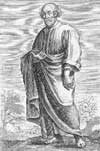

Zevk... Kutsal yaşamın başı da sonu da odur.
— Epikür
Platon’un (MÖ 429-347) ölümünden sonraki birkaç yüzyıl boyunca Yunan felsefesi iki rakip gruba ayrıldı. Stoacılık hayatın acımasız, acı dolu ve zalim olduğunu söylüyordu. Onlara göre mutluluğa giden tek yol erdemli yaşamak ve maddi zevklerden sıyrılmaktı.
Epikürcüler ise rakiplerine şunu söylüyordu: “Hayat kısa. Öyleyse keyfimize bakalım.”

Atina’nın dost canlısı, neşeli öğretmeni Epikür (MÖ 341-270) zevki kutsayan felsefe geleneği ile tanınmaktadır. Bu düşünce acı ve korkulardan kaçınmayı öğütler. Epikürcülük olarak bilinen filozofun öğretisi, Roma ve Yunanistan’da yüzyıllar boyunca büyük bir etkiye sahip olmuştur.
Epikür, Sisam adasında doğdu. Atinalı bir sömürgeci ve askerin oğluydu. 14 yaşındayken felsefe çalışmaya başladı. Ailesi diğer Atinalılarla birlikte Sisam’dan sürgün edildiğinde bir mülteci oldu. MÖ 311 yılında kendi felsefe okulunu kurdu ve MÖ 307 yılında bu okulu Atina’ya taşıdı.
Epikür Atina’da büyük bir şaşkınlık yarattı. Filozoflardan beklenilen pek çok şeyi yapmıyordu. Bu dönemde filozofların Sokrat (MÖ 470-399) gibi alçak gönüllü ve çileci bir hayat yaşamaları beklenirdi. Epikür ise öğrencilerine zevkin kötü bir şey olmadığını öğretiyordu. Özellikle dostluk en asil zevkti. Büyük bölümü kaybolmuş olan Üç yüz kitap yazdığı düşünülmektedir. Kitapları felsefede önemli sarsıntılara neden olmuştur. Epikür hazcı değildi. Basit bir hayat yaşamış ve seksten uzak durmuştu. Diğer taraftan dostluğu ve rahat bir yaşam sürmeyi reddetmenin anlamsız olduğunu düşünüyordu.
Epikür acı ve korkudan mümkün olduğunca kaçınılması gerektiğini öğretiyordu. Korku duygusuna yaklaşımı, onun Antik Yunan dinini pek çok açıdan eleştirmesini sağladı. Ona göre bu din, Yunanlılara ölümden sonra cezalandırılacaklarını söyleyerek onların ölümden korkmasına neden oluyordu. Epikür tanrılara inansa da onlardan korkmak için hiçbir neden olmadığını söylüyordu.
Öldüğü gün, bir dostuna “Gerçekten mutlu bir gün” başlıklı bir mektup yazmıştı.
Ek Bilgiler
1- Günümüzde epikürcü deyimi boğazına düşkün kişiler için kullanılmaktadır. İronik bir şekilde Epikür’ün kendisi hiç de boğazına düşkün değildi. Neredeyse sadece ekmek yiyip su içerek yaşıyordu.
2- Epikür çocukluk öğretmenlerine karşı öfkeliydi. Özellikle Nausiphanes’i sonraki yazılarında Mollusk (yumuşakça) olarak anacaktı.
3- Stoacılardan farklı olarak Epikürcüler politikadan uzak durdular. Onlara göre çekişmeli Yunan siyasetinde güç sahibi olmak, bir kişiye ancak acı dolu bir son getirebilirdi.